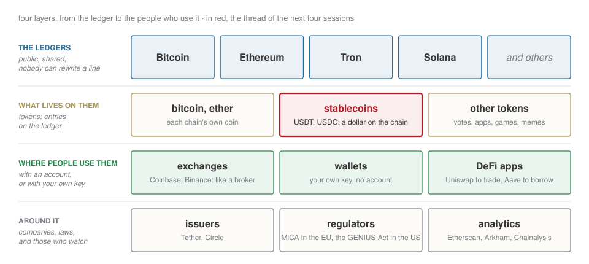
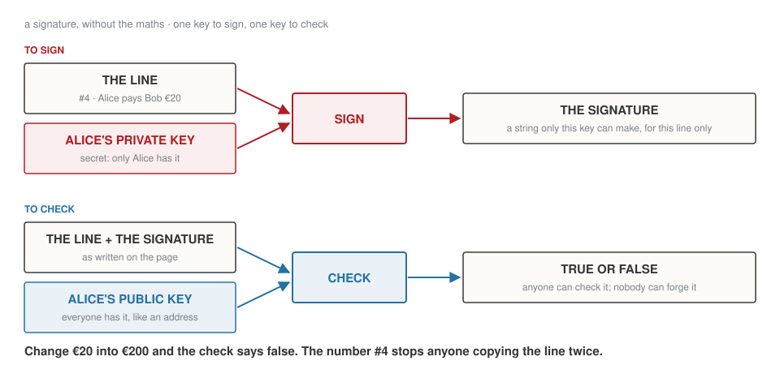
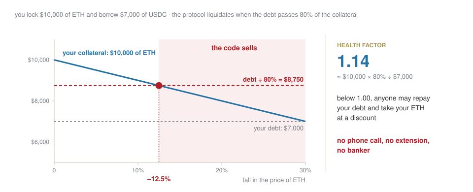
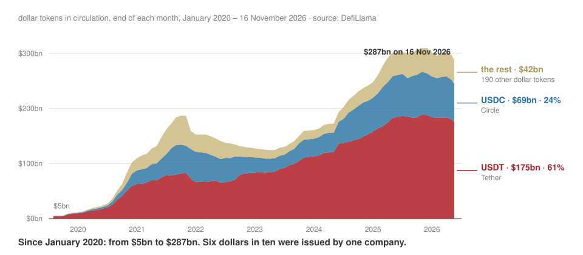
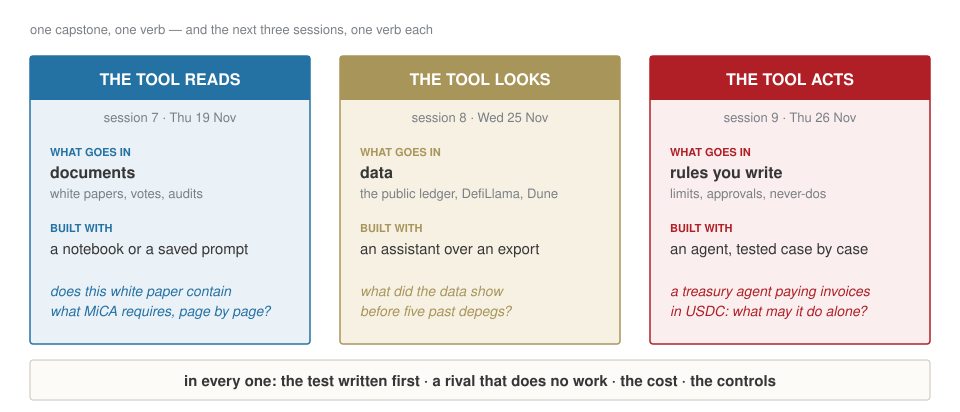

The crypto world, simply. Then the dollar inside it.
Week 6 · Wednesday 18 November 2026 · 10:00–13:00
AI for Business and FinTech · European School of Economics, Florence
Where we are
| 1–5 | 23 Sep – 4 Nov | a model’s release · tokens · look first · read first · agents and harnesses ✓ |
| 6 | today | the crypto world, simply · stablecoins · the capstone |
| Mid + 7 | Thu 19 Nov · 15:00 | the oral · how a stablecoin works · the AI that reads |
| 8 | Wed 25 Nov | USDT on the chain · the AI that looks |
| 9 | Thu 26 Nov · 15:00 | an agent that pays in USDT · the AI that acts |
| 10 | Wed 2 Dec | capstone studio |
| Rev. | Wed 9 Dec | final presentation |
From today the course turns to crypto: first the whole world in one hour, then one coin, Tether, for four sessions, and what AI does with it.
Last session, in one slide
An agent is a loop: the model asks, your code decides. The harness is the loop with a chassis: tools, permissions, a rules file, subagents, MCP, hooks, a transcript.
Every tool is a door, and every door opens both ways: whatever a tool returns is text in the context, next to your instructions.
A rule in the prompt is a request. A permission or a hook is a law.
The undo button: a file change can be reverted. A message sent, a payment made, a row deleted cannot. The irreversible actions get the laws.
Today
| 10:00 | the midterm, what it taught us |
| 10:15 | tomorrow’s oral: what to prepare tonight · your MCP case, in two minutes |
| 10:35 | how a blockchain works, 3Blue1Brown’s way: a page, a signature, the work, the miners |
| 11:20 | break |
| 11:35 | try it yourself · the rest of the map: the key, the exchange, the pool, the loan |
| 12:10 | the dollar inside it: stablecoins, and Tether |
| 12:25 | the capstone: one verb, one tool, the test written first |
| 12:55 | three ideas for Wednesday · three lines |
Tomorrow: the oral
Thursday 19 November, 15:00, before the lesson. It counts as announced in the brief: same weight, same marking grid.
What changes: no list of questions. You design an MCP server, without writing it, and defend the design.
| 8 minutes | you present your page |
| 15 minutes | my questions on it, one for each of sessions 1–5 |
| 5 minutes | live: I change one number, you re-price it in front of me |
The same rule as the midterm: every line on the page, you can explain.
Tonight: one page, an MCP server for a real job
Your case from homework 5, or one that would have fed your midterm: Coinbase’s filings on SEC EDGAR.
- The job: who asks what, how often, and what a wrong answer costs.
- The tools: three at most. For each, what goes in, what comes out; reads or writes.
- The source: open today, and who owns it.
- Where it runs: on your laptop or on a server; who can reach it, and what it costs a month.
- The bill: tokens in and out for one question, the model’s two prices, one month at your volume.
- The doors: what a tool’s answer could smuggle in, and what it must never do.
- The test: five questions answered by hand, and the rival: the assistant without your server.
No code. A sheet for the bill, the model’s page open for the prices.
Part 1 The crypto world, simply
The crypto world on one page

A blockchain is a shared ledger
3Blue1Brown’s way in: a page of payments among friends, then one problem at a time, each with its fix. ▶ 3Blue1Brown, But how does bitcoin actually work?
The signature, up close

No bank, so nobody keeps the page
- Everyone keeps a copy. Every new line is announced to the whole network, and each person writes it into their own copy.
- The new problem. Lines arrive in different orders, and nothing stops Alice from telling Bob one thing and Charlie another. Which copy is the true one?
- 3Blue1Brown’s answer: trust the copy with the most work in it, where work is something nobody can fake, because the only way to do it is to guess.
The work: guessing a number
- A fingerprint (a hash). Any text goes in; 64 characters come out. The same text always gives the same fingerprint, one letter changed gives a completely different one, and there is no way back from the fingerprint to the text.
- The puzzle. Add a number to a block of lines and change it until the block’s fingerprint starts with zeros. There is no shortcut, only guesses: four zeros take about 65,000 guesses on average, and each extra zero sixteen times more.
- The proof. Finding the number took thousands of guesses; checking it takes one. Anyone can see the work was done.
Nobody can rewrite a line
Every block carries the fingerprint of the one before. Change one line and every block after it breaks: to rewrite history you would have to redo all that work, faster than everyone else.
Who does the work, and why: the miners
- Miners collect the new lines into a block and race to find the number. The first to find it announces the block; everyone checks it in one try and adds it to their copy.
- The reward. The first line of each block pays the winner new bitcoin, out of nothing: 3.125 bitcoin a block since April 2024, plus the fees. It is the only way new bitcoin is ever made. The reward halves every 210,000 blocks, about every four years, so there will never be more than 21 million.
- The rule. When two chains disagree, everyone follows the one with the most work. To cheat, you would have to out-guess all the other miners together. That is why a shop waits a few blocks, about an hour, before trusting a large payment.
A new block about every ten minutes. Bitcoin has no company behind it: the page, the signatures and the race are all there is. The dollar tokens of Part 2 are the opposite: a company behind every coin.
Try it yourself
LIVE · andersbrownworth.com/blockchain · ten minutes · you drive
- Hash. Type your name, then change one letter: the fingerprint changes completely.
- Block. Press Mine. The computer tries number after number until the fingerprint starts with four zeros. That search is the work.
- Blockchain. Change a line in block 2: every block after it turns red. Re-mine them, one at a time.
- Distributed. Three copies, one of them changed. The copy that matches the others wins.
A wallet holds a key, not coins

A market with no one on the other side

On Coinbase you buy from another person. On a DEX such as Uniswap there is nobody: a pool of two tokens and one rule, x \cdot y = k. Every coin you take out makes the next one dearer.
A loan with no banker

No credit score and no meeting: you lock more than you borrow, and a program watches the price. Here ETH can fall 12.5% before the code sells your collateral.
Where the yield comes from
| the yield is… | who pays it | it lasts while… |
|---|---|---|
| interest | a borrower, like the one on the last slide | someone wants to borrow |
| fees | a trader, on every swap through the pool | someone wants to trade |
| a token the protocol prints | the next person who deposits | new money keeps coming in |
If you cannot say who pays the yield, assume it is you.
Where AI works in this world
| what it is | what AI does with it | session | |
|---|---|---|---|
| the documents | reserve reports, terms, white papers | reads them, quotes the line, finds the missing promise | 7 |
| the ledger | one public page, every payment, no names | looks at every payment: flows, freezes, thefts | 8 |
| the key | whoever signs, pays, with no undo | acts, within limits a person wrote | 9 |
Three verbs, one coin: the next three sessions all look at the same stablecoin.
Part 2 The dollar inside crypto
The biggest product in crypto is a dollar

A stablecoin, in one sentence
A company takes your dollar, keeps it in a reserve, and writes one token on the ledger. Hand the token back, and it pays you the dollar.
Between those two moments the token moves like any crypto: in seconds, at night, across borders, wallet to wallet. The dollar stays in the reserve and earns interest, for the company.
How the reserve works, who may hand the token back, and what the company publishes about it: session 7.
Tether: our case for four sessions
USDT, issued by Tether since 2014. $175bn in circulation on 16 November 2026: six of every ten dollar tokens.
About half of it lives on Tron, a third on Ethereum.
The man behind it, Giancarlo Devasini, is Italian. Forbes estimates he owns about 45% of Tether and counts him the richest person in Italy. The chief executive is Paolo Ardoino.
Why this coin
- It is the largest, and it publishes a reserve report every quarter: something to read.
- Every transfer is on a public ledger, and Tether can freeze it: something to look at.
- Companies pay suppliers with it across borders: something an agent could act on.
Source for the supply: DefiLlama, 16 Nov 2026.
Three things AI does with a stablecoin

Part 3 The capstone
It is the midterm again, but you choose the question
Pick one real decision about stablecoins, or anywhere in finance, that somebody takes every week. Build, with the tools of this course, an AI tool that helps take it.
Write the test before you build. Run it, put it next to a rival that does no work, price it, and say what you would not let it do. Then defend it for fifteen minutes.
No code: a notebook, ChatGPT or Claude, a sheet, an agent you configure.
The midterm was Coinbase’s question and Coinbase’s documents. This time the question is yours, and so is the tool. The full brief.
Four tests every idea must pass
- The source is open today. The documents or the data are in your hands, not promised.
- Ten cases, answered by hand. If you cannot write the answers yourself, you cannot test the tool.
- It fits in two weeks. A narrow tool, well tested, beats a broad one nobody checked.
- A “no” is still a result. If a failed test makes the project worthless, it was a bet, not a question.
Three ideas, through the four tests
| the idea | verdict | why |
|---|---|---|
| An AI that tells me which coins will go up next month | fails 2 and 4 | the answer is in the future, and “it cannot” is the expected result |
| A checker that compares a stablecoin’s claims with its reserve report, every quarter | passes | public documents, answers you can check by hand, five reports in two weeks, and a miss is a finding |
| An agent that moves my savings between DeFi pools for the best yield | fails 3 | not two weeks, and the course has one rule: no real money |
The steps
| step | by | what you do |
|---|---|---|
| 1. Three ideas | Wed 25 Nov | three ideas through the four tests; one is chosen in class |
| 2. The plan | Thu 26 Nov | one page: decision, user, source, test, rival, main risk, steps |
| 3. The test, first | Sat 28 Nov | ten questions or cases answered by hand, three traps, the tab dated |
| 4. The tool | Mon 30 Nov | built; the model card written down |
| 5. The draft | Tue 1 Dec | the tool, the test run once, the memo’s headings; reviewed on 2 Dec |
| 6. Run, price, write | Sun 6 Dec | the final run, every miss named, the cost, the memo, rehearsed |
What you hand in, and how it is marked
By Sunday 6 December, 23:59: a memo of about 2,000 words on Turnitin; the tool, the test sheet and the cost in your Drive folder. Wednesday 9 December: fifteen minutes, with the tool live.
| weight | criterion | what earns it |
|---|---|---|
| 15% | framing | a real decision, a named user, a cost of being wrong |
| 25% | evidence | the test written first, a rival, every miss named |
| 20% | the artefact | a tool someone else can open and run |
| 20% | risk and governance | controls that are laws, not requests; MiCA and the AI Act |
| 20% | communication | within length, within time, honest about what failed |
Close
For Wednesday 25 November: three ideas, one paragraph each, each through the four tests. We keep one.
Three lines at the bottom of your sheet: what a ledger is, how a dollar gets onto it, and the idea you like best today.
Next: Thursday 19 November, 15:00. How a stablecoin works, and an AI that reads Tether’s reports.
AI for Business & FinTech · ESE Florence